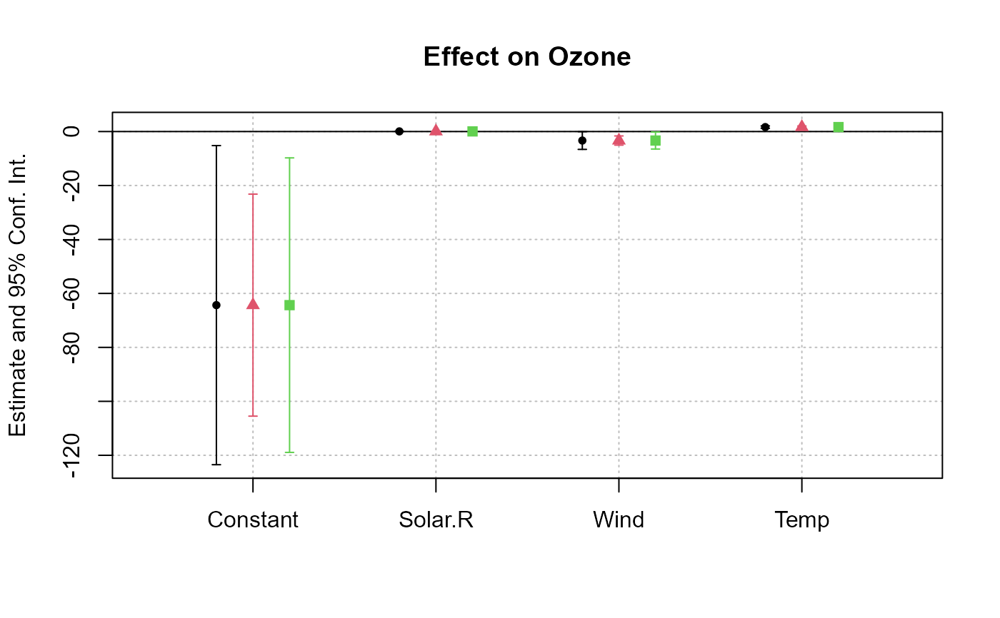

Simple function that replicates fixest objects while (optionally) computing different standard-errors. Useful mostly in combination with etable or coefplot.
# S3 method for fixest rep(x, times = 1, each = 1, cluster, ...) # S3 method for fixest_list rep(x, times = 1, each = 1, cluster, ...) .l(...)
| x | Either a fixest object, either a list of fixest objects created with |
|---|---|
| times | Integer vector giving the number of repetitions of the vector of elements. By default |
| each | Integer scalar indicating the repetition of each element. Default is 1. |
| cluster | A list containing the types of standard-error to be computed, default is missing. If not missing, it must be of the same length as |
| ... | In |
Returns a list of the appropriate length. Each element of the list is a fixest object.
To apply rep.fixest on a list of fixest objects, it is absolutely necessary to use .l() and not list().
# Let's show results with different standard-errors est = feols(Ozone ~ Solar.R + Wind + Temp, data = airquality)#>#> model 1.1 model 1.2 model 1.3 #> Dependent Var.: Ozone Ozone Ozone #> #> (Intercept) -64.34* (21.30) -64.34** (20.15) -64.34* (19.66) #> Solar.R 0.0598 (0.0335) 0.0598*** (0.0162) 0.0598 (0.0314) #> Wind -3.334* (1.181) -3.334*** (0.8343) -3.334* (1.135) #> Temp 1.652*** (0.1583) 1.652*** (0.1927) 1.652*** (0.1386) #> _______________ _________________ __________________ _________________ #> S.E.: Clustered by: Month by: Day by: Day & Month #> Observations 111 111 111 #> R2 0.60589 0.60589 0.60589 #> Adj. R2 0.59484 0.59484 0.59484# # To rep multiple objects, you need to use .l() # est_bis = feols(Ozone ~ Solar.R + Wind + Temp | Month, airquality)#>#> model 1.1 model 2.1 model 1.2 #> Dependent Var.: Ozone Ozone Ozone #> #> (Intercept) -64.34* (21.30) -64.34** (20.15) #> Solar.R 0.0598 (0.0335) 0.0522 (0.0408) 0.0598*** (0.0162) #> Wind -3.334* (1.181) -3.109. (1.306) -3.334*** (0.8343) #> Temp 1.652*** (0.1583) 1.875*** (0.1816) 1.652*** (0.1927) #> Fixed-Effects: ----------------- ----------------- ------------------ #> Month No Yes No #> _______________ _________________ _________________ __________________ #> S.E.: Clustered by: Month by: Month by: Day #> Observations 111 111 111 #> R2 0.60589 0.63686 0.60589 #> Within R2 -- 0.53154 -- #> model 2.2 model 1.3 model 2.3 #> Dependent Var.: Ozone Ozone Ozone #> #> (Intercept) -64.34* (19.66) #> Solar.R 0.0522* (0.0202) 0.0598 (0.0314) 0.0522 (0.0391) #> Wind -3.109*** (0.7986) -3.334* (1.135) -3.109. (1.215) #> Temp 1.875*** (0.3671) 1.652*** (0.1386) 1.875** (0.2209) #> Fixed-Effects: ------------------ ----------------- ---------------- #> Month Yes No Yes #> _______________ __________________ _________________ ________________ #> S.E.: Clustered by: Day by: Day & Month by: Day & Month #> Observations 111 111 111 #> R2 0.63686 0.60589 0.63686 #> Within R2 0.53154 -- 0.53154#> model 1.1 model 1.2 model 1.3 #> Dependent Var.: Ozone Ozone Ozone #> #> (Intercept) -64.34* (21.30) -64.34** (20.15) -64.34* (19.66) #> Solar.R 0.0598 (0.0335) 0.0598*** (0.0162) 0.0598 (0.0314) #> Wind -3.334* (1.181) -3.334*** (0.8343) -3.334* (1.135) #> Temp 1.652*** (0.1583) 1.652*** (0.1927) 1.652*** (0.1386) #> Fixed-Effects: ----------------- ------------------ ----------------- #> Month No No No #> _______________ _________________ __________________ _________________ #> S.E.: Clustered by: Month by: Day by: Day & Month #> Observations 111 111 111 #> R2 0.60589 0.60589 0.60589 #> Within R2 -- -- -- #> model 2.1 model 2.2 model 2.3 #> Dependent Var.: Ozone Ozone Ozone #> #> (Intercept) #> Solar.R 0.0522 (0.0408) 0.0522* (0.0202) 0.0522 (0.0391) #> Wind -3.109. (1.306) -3.109*** (0.7986) -3.109. (1.215) #> Temp 1.875*** (0.1816) 1.875*** (0.3671) 1.875** (0.2209) #> Fixed-Effects: ----------------- ------------------ ---------------- #> Month Yes Yes Yes #> _______________ _________________ __________________ ________________ #> S.E.: Clustered by: Month by: Day by: Day & Month #> Observations 111 111 111 #> R2 0.63686 0.63686 0.63686 #> Within R2 0.53154 0.53154 0.53154